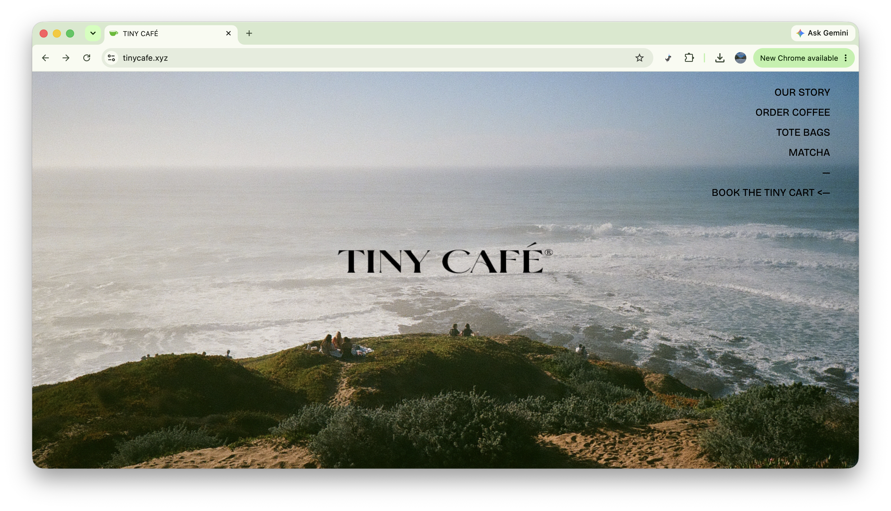
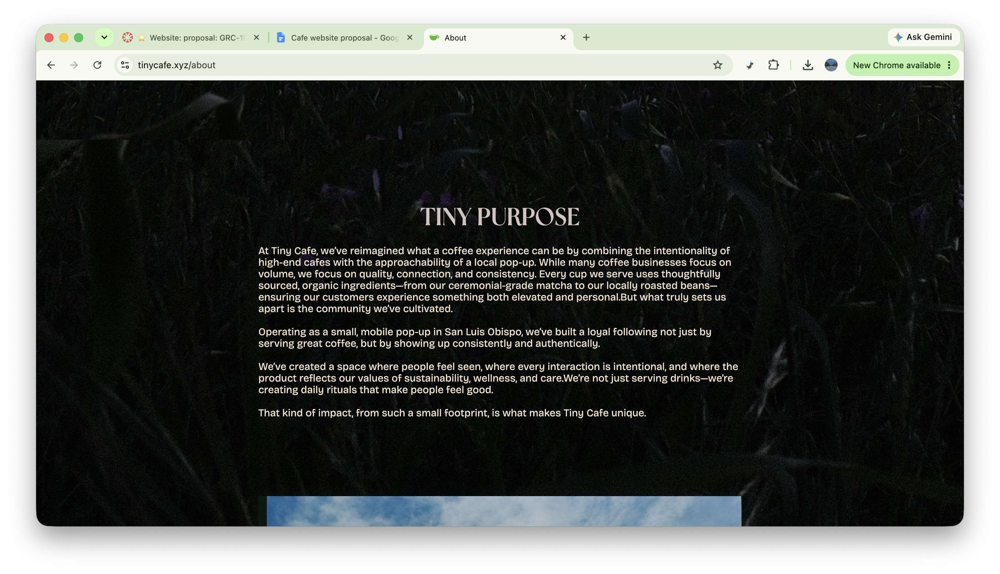
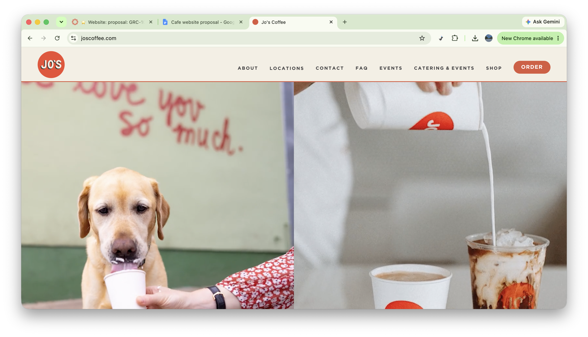
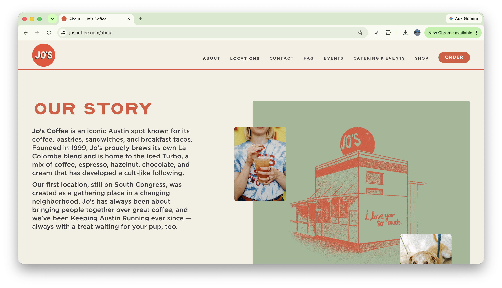
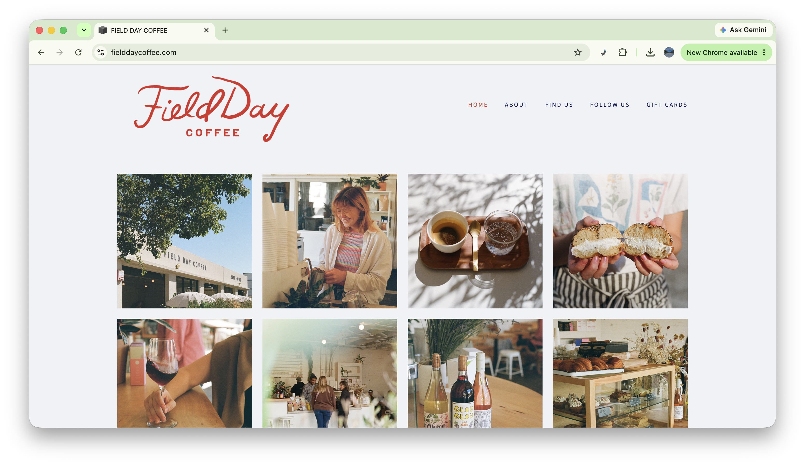
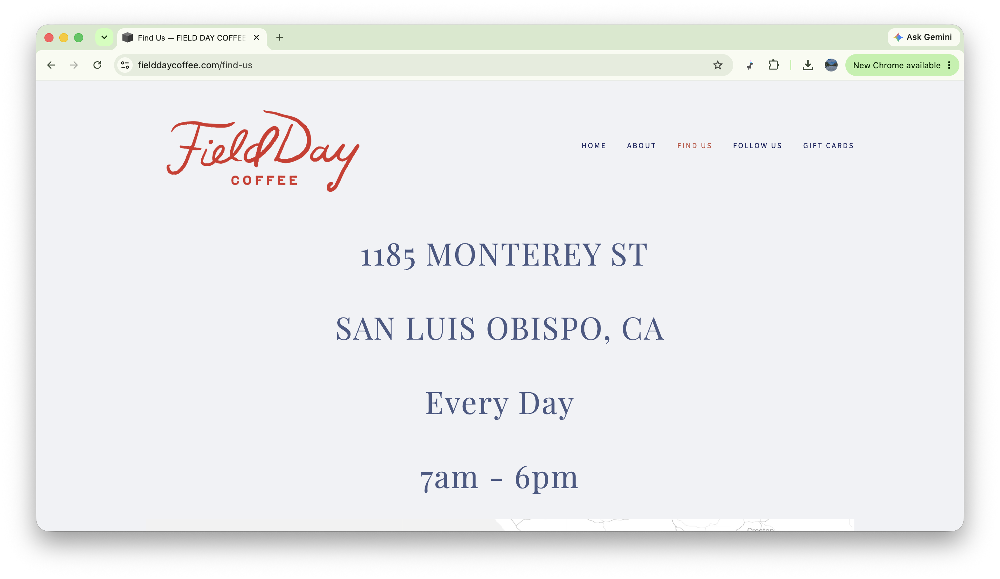

SLO Joe Café
A cozy cafe that promotes relaxation and a place to work/study; features items like coffee, matcha, tea, refreshers, and baked goods. Our specialty is lattes and bagels, specifically New York style bagels.
SLO residents who want a cozy cafe feel, and love coffee/beverages and baked goods.
I want to target students and working adults who need a comfy and quiet place to complete their work. I also want to target people who love bagels and pastries, especially highlighting the Jewish community because there is a small and relatively underrecognized population in SLO.






Welcome to SLO Joe Café!
[film style photos of the cafe and the menu items in an aesthetically pleasing layout]
Since opening, SLO Joe has been committed to one simple idea: better coffee, shared in community. From the start, our cafés have been places to pause – whether to get work done, connect with friends, or simply find a moment of quiet in the middle of the day.
But coffee is only part of the story. The real joy is in the people–and the bagels. Our baristas aren’t just skilled at their craft; they’re neighbors who learn your name, remember your order, and care about your day. At SLO Joe, we want to serve authentic New York style bagels while creating a warm, welcoming space for the Jewish community in San Luis Obispo. It’s a place to enjoy familiar food, connect with others, and feel at home.
[A photo of the interior of the café]
$5
Cup of our signature coffee
$3
Hot or iced: English breakfast, earl grey, peppermint, or hibiscus
$4
Hot or iced, + syrup for .50
$5
House lemonade, iced tea
$3
Plain, everything, salt, or sesame. Plain or scallion cream cheese.
$6
Your choice of bagel w/ scallion cream cheese, lox, capers, red onion, & tomato
$9
Can be warmed
$4
[Latte with a bagel]
1234 Grand Ave
San Luis Obispo, CA 93410
[Map of the area in black and white with a gold star on the location]